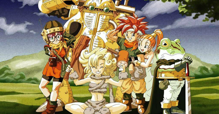
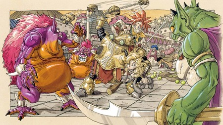
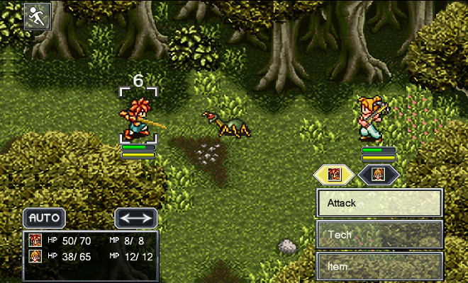
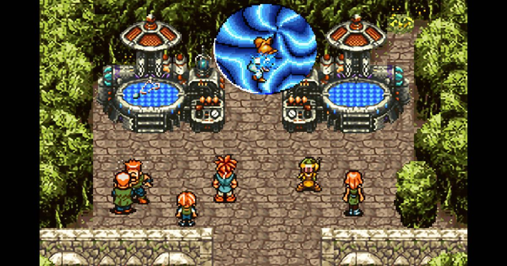

Game Zone
Welcome to Game Zone

Chrono Trigger
|  |  |
|  |  |
Chrono Trigger presenta el modo de juego estándar de un videojuego de rol, pero con varias innovaciones. Como con muchos RPGs, el jugador toma control del protagonista y sus compañeros a lo largo de un universo de ficción bidimensional, que consiste en varios bosques, ciudades y calabozos. La navegación está conducida por un mapa del mundo visto desde arriba, que representa el paisaje desde una vista aérea escalada. Lugares tales como ciudades y bosques están representados por mapas escalados más realistas, en los cuales el jugador puede conversar con la gente local para procurarse ítems y servicios, resolver enigmas y desafíos o encontrarse con enemigos. Sin embargo, el modo de juego de Chrono Trigger se desvía de aquel del RPG tradicional en que, más que tener encuentros aleatorios, muchos enemigos están visibles en el mapa, o esperan escondidos para emboscar al grupo. El contacto con el enemigo inicia una batalla que ocurre directamente en el mapa mismo en vez de en una pantalla de batalla separada.
En Chrono Trigger, existen habilidades que pueden atacar física o mágicamente a los enemigos, pero hay objetos para recuperar o defender de ciertos ataques. Cada unidad tiene su HP, y los personajes se desmayan si su HP cae a 0. Solo se puede entrar 3 personajes a la batalla y los personajes que no entraron recibirán la mitad de experiencia al terminar la batalla. Si, al terminar o escapar un combate, un personaje fuese eliminado, revivirá con HP 1, pero el juego se acaba si los 3 personajes (salvo eventos) fuesen eliminados. Fuera de batallas, los personajes tienen sus armas únicas, cascos y armaduras divididas por sexaje y accesorios, pero los accesorios y objetos clave no pueden ser vendidos. Algunos accesorios recortan costo SP o aumenta HP MAX, detectan HP del enemigo, o mejoran parámetros.
Chrono Trigger actualizó el sistema ATB (Batalla en tiempo activo, Active Time Battle) -heredada de la saga de juegos de Square, Final Fantasy, que fue diseñada por Hiroyuki Itō para Final Fantasy IV a su versión 2.0. Cada personaje puede actuar en la batalla cuando su temporizador personal —que depende de sus atributos en velocidad— llega a cero. La magia y las técnicas físicas especiales —como las habilidades con espadas— están manejadas a través de un sistema de técnicas. Estas utilizan SP (puntos de magia) del personaje, y generalmente afectan solo un área; algunos hechizos dañan monstruos dentro del alcance del usuario o del primer objetivo, mientras que otros pueden dañar a los que se encuentran formados en línea. Los enemigos generalmente cambian de posición durante el transcurso de la batalla, lo que crea oportunidades para usar tácticamente las técnicas. Un rasgo único del sistemas de técnicas del Chrono Trigger, son las numerosas técnicas cooperativas que se pueden utilizar.11 Cada personaje recibe 8 técnicas personales que se pueden usar en conjunto con las de otros para crear dobles y triples, que tienen un efecto mayor. Por ejemplo, la técnicas "Ciclón" de Crono, se puede combinar con "Lanzallamas" de Lucca para crear "Torbellino de Fuego". Cuando los personajes con técnicas compatibles tienen los suficientes SP para realizarlas, y pueden actuar, el juego automáticamente muestra el combo como una opción.Chrono Trigger presenta otros rasgos únicos en su modo juego, incluyendo el viaje a través del tiempo. El jugador tiene acceso a siete diferentes eras de la historia del mundo, y las acciones hechas en el pasado afectan eventos del futuro. A lo largo del juego se encontrarán nuevos aliados, completarán aventuras periféricas y buscarán importantes villanos. El viaje a través del tiempo se realiza mediante portales y pilares de luz llamados portales temporales, como también por medio de una máquina del tiempo llamada Epoch. El juego también admite una opción llamada New Game + (Juego nuevo +): luego de completar el juego, el jugador puede volver a empezarlo con datos de la sesión anterior. Los niveles de los personajes, las técnicas aprendidas y el equipamiento con los ítems obtenidos se copian a la nueva sesión, mientras que se descarta el dinero adquirido y algunos elementos relacionados con la historia. Otro rasgo inusual de Chrono Trigger es que se puede completar sin el protagonista en el grupo, y que presenta múltiples finales. El progreso anterior a la batalla final determina cual de los trece finales —algunos con mínimas variaciones determinadas por pequeñas decisiones— obtendrá. Algunos de los finales solo pueden ser conseguidos en una sesión de New Game +, en la cual se puede retar al jefe final antes de lo permitido normalmente. Square posteriormente utilizó el mismo concepto de New Game + en otros títulos como Vagrant Story, Chrono Cross, Parasite Eve y Final Fantasy X-2.
Noticias

El mítico Resident Evil actualmente
Ese juego que es su día atrajo a millones de jugadores al ámbito del terror, hoy en día se encuentra prácticamente inutilizado. Una pena, pero es lo que tiene los nuevos lanzamientos .

Destiny II está justo como lo dejaron en 2009, no han vuelto a meter ninguna nueva actualización.
Si quieres probar Destiny II puedes comprarlo a un precio ridículo.